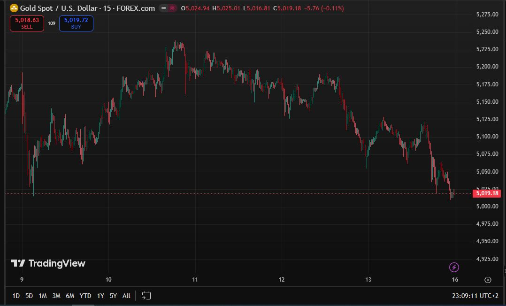

Hindsight Bias е когнитивна изкривеност, при която след като едно събитие се случи, започва да изглежда очевидно. Когато гледаш завършена графика, лесно е да кажеш „трябваше да купя тук“ или „трябваше да продам там“.
В реално време обаче пазарът е пълен с шум, несигурност и емоции. Дори стратегии, които работят в дългосрочен план, не са лесни за изпълнение без достатъчно опит.
Няколко важни принципа:
Ключовият урок: Научете се да разпознавате шума на пазара и ефекта на Hindsight Bias. В дългосрочен план това, което има значение, е дисциплина, стратегия и добро управление на риска (risk management), а не това дали дадено движение изглежда очевидно след като вече се е случило.
Дори добре тествана стратегия може да доведе до губещи сделки.
Много хора мислят:
„Ако има стратегия → винаги печеля“
Но реалността е по-различна:
probability → печалба в дългосрочен план
Дори перфектен сетъп може да не даде резултат, ако:
Успехът идва от дисциплина, стратегия и управление на риска.
| Session | Час (BG) | Какво ни трябва |
|---|---|---|
| Asia | 00:00 – 09:00 | Asia High / Low |
| London | 09:00 – 12:00 | London High / Low |
| New York | 14:30 – 17:00 | Trade setup |
Време (българско): 14:00 – 14:30
Тогава започва да влиза американската ликвидност
Пазарът на злато (XAU/USD) се движи по повторяеми модели всяка седмица.
Стратегии като NY Sweep, Judas Swing или Liquidity Sweep описват едно и също явление с различни думи.
Ако разбереш тази логика можеш да я превърнеш в свой трейдинг план.
| Тип движение | Как изглежда | Цел / защо се случва |
|---|---|---|
| Liquidity Sweep | Цената „подмята“ high / low | Събира стопове и поръчки за големите участници |
| Judas Swing | Fake move в обратна посока на рейнджа | Изплашва малките трейдъри → освобождава ликвидност |
| London / Asia Sweep | Цена пробива локален рейндж | Търси по-висока времева ликвидност (Asia High / Low) |
| Trend Move | Истинският тренд след sweep | Това е движението, което носи реалните пипсове |
💡 Виждаш ли как всички различни стратегии всъщност описват едно и също? Просто някои трейдъри казват „Judas Swing“, други „liquidity sweep“, а трети „NY breakout“.
Когато гледаш графиката в реално време, всичко е хаотично:
Но след като денят приключи, графиката изглежда като повторение на сценарий:
И точно тук идва магията: пазарът почти винаги прави едно и също, просто трябва да знаеш кога и къде да гледаш.
Пазарът е като машина, която се върти на едни и същи колела.
Ти просто чакаш точния момент, когато колелото се активира и имаш шанс да влезеш с максимален шанс за печалба.
Този анализ е представен с образователна цел и е направен от AI.
Целта е да се покаже, че моделите наистина се случват в пазара, но това не означава, че са лесни за търгуване.
Показаната графика представя седмична структура на Gold (XAU/USD).
Идеята не е да се създава илюзия за лесна печалба, а да се разбере логиката зад движенията на пазара.

На графиката се виждат 4 ясни фази в поведението на пазара.
В началото на седмицата пазарът често преминава през няколко характерни етапа:
Това поведение често се разглежда като liquidity building.
В този период пазарът започва да създава зони като:
Тази натрупана ликвидност по-късно се използва като „гориво“ за по-силното движение през седмицата.
След формирания range често се появява по-рязко движение нагоре.
Това движение често се разглежда като buy-side liquidity raid.
В този момент на пазара се случват няколко неща едновременно:
Въпреки силното движение, това невинаги е началото на истинския тренд, а често е събиране на ликвидност преди следващата фаза на пазара.
След като ликвидността бъде взета, пазарът често започва да променя структурата си.
Вместо продължение нагоре започват да се формират:
Това поведение често се разглежда като преход към distribution и bearish shift в структурата.
Именно тук започва истинското движение на седмицата, когато пазарът вече е събрал достатъчно ликвидност от по-ранните фази.
В края на седмицата често се наблюдава рязко движение надолу.
Това може да изглежда като:
Подобно движение често се свързва със:
След като ликвидността е събрана по-рано през седмицата, финалното движение често се случва именно в последните сесии.
Тази седмица е добър пример за седмичен liquidity cycle.
Движението на пазара следва сравнително ясна структура:
Тази последователност се среща често в структурата на пазара, но разпознаването ѝ в реално време остава предизвикателство.
На графиката всичко изглежда лесно.
След като движението вече се е случило, структурата изглежда очевидна.
Но в реално време пазарът изглежда съвсем различно.
Именно затова трейдингът е труден.
Много хора си мислят:
Но реалността е друга.
За да оцелееш на пазара, трябва:
Иначе това не е трейдинг.
Това е ХАЗАРТ.